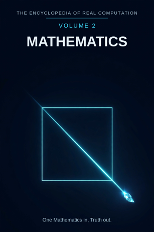

Chron.
The Encyclopedia of Real Computation

One Mathematics in, Truth out.
Home domain: Logic
One Mathematics in, Truth out.
◉ A Principle .... Mathematics ◎ B Purpose ...... Proof ◉·◉ A.A Alpha ...... the Mathematician ◉·◎ A.B Cross ...... the Argument △ X Primitive .... Numbers ⚙ Y Protocol ..... Operations ⬢ Z Product ...... the Theorem ◐ i State ........ the Undecidable ⚖ j Condition .... the Axioms ⊞ N Set .......... the Branches ◷ h Time ......... the Ages ▣ C Context ...... the Sciences ▦ D Domain ....... the Disciplines ♥ E Emotion ...... Elegance ➤ F Intention .... Abstraction ↻ pi Cycle ........ the Spiral ➔ phi Step ......... the Lemma ⚄ e Probability .. Certainty • h-bar Planck ..... the Unit
Σ sigma Summation .. the System
◈ gamma Scale ...... Magnitude Δ delta Change ..... the Derivative ⁂ sigma' Options ... the Conjectures Ω Omega Answer ..... Truth
Every volume of this encyclopedia does the same work. The Prologue figures the subject whole. Then come twenty-four chapters, one per term, each doing four jobs in plain English: what the term means, where it sits in the computation, how it works on the volume's one running example, and what breaks without it. Then the Data, whole. Then the Crossings. Then the Sum. The running example of this volume is the diagonal of a square: one short line, measured honestly, which breaks arithmetic open and has to be repaired by proof.
Mathematics: the study of number, shape, and pattern, carried out by proof. Proof: a chain of steps from accepted starting points to a conclusion that cannot be refused without refusing the steps.
◉ Mathematics. ◎ Proof = the root of Mathematics: aimed at itself,
mathematics asks what can be shown. ◉·◉ the Mathematician: mathematics turned on itself becomes a person who does it.
◉·◎ the Argument: mathematics crossed with proof - the chain that
carries the crossing. △ Numbers = Mathematics parted over the Branches. ⚙ Operations = the function of the Numbers, the working applied. ⬢ the Theorem = Numbers times Operations, the product, once the Argument has carried it to Proof. ◐ the Undecidable = the root of negative Mathematics: what the system cannot settle from inside. ⚖ the Axioms = the condition, element by element: mathematics stands while its axioms hold. ⊞ the Branches = the set: Arithmetic, Algebra, Geometry, Trigonometry, Analysis, Probability, Statistics, Number Theory. ◷ the Ages: mathematics comes down through time. ▣ the Sciences: where mathematics stands. ▦ the Disciplines = the Branches crossed by the Study. ♥ Elegance = the difference a landing makes. ➤ Abstraction = the intention that carries a context. ↻ the Spiral: mathematics returns to its old ground one level up. ➔ the Lemma: one step, proved, stood on.
⚄ Certainty: the odds a theorem carries - proof sets them at full. • the Unit: the least piece, the number 1. Σ the System: all of
mathematics, summed as one. ◈ Magnitude: the scale of a result. Δ the Derivative: mathematics' own measure of change.
⁂ the Conjectures: the spread of what is claimed but not yet proved.
Ω Truth: the answer mathematics resolves into.
IF If Mathematics to Proof, then Numbers & Operations is the Theorem, or the Undecidable while the Axioms for the Branches, through the Ages, in the Sciences, the Disciplines, Elegance, Abstraction, at the Spiral by the Lemma, with Certainty over the Unit - sum the System, scale Magnitude, change the Derivative, options the Conjectures - therefore Truth.
Stands below, after the chapters, figured whole: the Branches crossed by the Study, thirty-two cells, and the six contexts.
The seven laws, run on this seed. Pythagoras: Mathematics squared plus Proof squared overlays the Sciences squared - the diagonal of this volume is literally his theorem, and the triangle checks in the Where, the If, and the Data identically. Law of cosines: the tilt between mathematics and proof is set by context - in the classroom the angle is gentle, at the frontier it is nearly flat. Binomial: the middle term is the Argument, two times over - mathematics shapes the proof, the proof reshapes the mathematics. AM-GM: Proof is the geometric mean between Mathematics and the One. Log law: Magnitude of the Theorem is Magnitude of the Numbers plus Magnitude of the Operations - size adds where work multiplies. Complex modulus: the Undecidable is counted in the size of the system; mathematics is larger, not smaller, for knowing its shadow. Triangle inequality: no route from Numbers to Theorem is shorter than the Argument; skip it and you hold a conjecture, labelled as such in the last term but one.
Mathematics begins with the plainest objects there are - numbers - and works them with a short list of operations anyone can learn. Its product is not the working but the theorem: a result that has been carried across an argument and can now be leaned on. The discipline is honest about its edges in a way no other field matches: it names its undecidable questions instead of hiding them, it prints the axioms it stands on at the front of the building, and it keeps its unproved claims in a separate, labelled room - the conjectures. Its history spirals: children count, then the counting becomes algebra, then the algebra becomes analysis, each turn standing on the last. And its finish is truth of a particular kind - not truth about the weather or the heart, but truth that holds because the steps hold, in any country, in any century, for anyone who checks. One Mathematics in, Truth out.
What it means. Mathematics is the study of number, shape, and pattern by proof. It is the oldest exact field and the strangest: its objects - numbers, figures, structures - are not found in the world the way rocks are found, yet its results bind the world without exception.
Where it sits. Mathematics is the Principle of this volume, the seed every other term grows from: Proof is its root, the Mathematician its self-product, the Argument its cross.
How it works. Take a square with sides of one unit and ask the field's simplest question about it: how long is the diagonal? Everything in this volume is mathematics answering that one question completely - and discovering, on the way, that the answer cannot be written as a fraction, must found a new kind of number, and still stands proved forever.
What breaks without it. Every other volume in this encyclopedia borrows mathematics' machinery: physics measures with it, chemistry counts with it, astronomy charts with it. Remove the Principle and the borrowing fields keep their objects and lose their exactness.
What it means. A proof is a chain: accepted starting points, steps each of which follows, and a conclusion at the end that a checker cannot refuse without pointing at a broken step. Proof is what mathematics is for - the difference between mathematics and opinion is nothing else.
Where it sits. Proof is the Purpose, B = the square root of A: mathematics aimed at itself extracts the demand to show, not just say. And B squared = A: a question fully proved settles back into mathematics itself.
How it works. The diagonal's length squared is two - that much is Pythagoras. The proof that it is no fraction takes a short chain: suppose it were a fraction in lowest terms; then both its numbers would have to be even; but lowest terms cannot both be even; so it is no fraction. Five steps, each checkable by a child, and the conclusion has stood for over two thousand years.
What breaks without it. Without proof, mathematics is measurement and habit - usually right, never certain, and unable to say which of its claims are which.
What it means. The mathematician is mathematics embodied: a person in whom the field's standards have become reflexes - what counts as shown, what smells wrong, where the soft step hides.
Where it sits. The Alpha, A times A: the field turned on itself. The same theorem held by a student and by a mathematician differs the way a fact differs in any field - in the company it keeps: exceptions, near-misses, three other roads to the same summit.
How it works. Hand the diagonal to a beginner and they measure it: about 1.41, close enough. Hand it to a mathematician and she asks what 1.41 leaves out - and the asking, not the measuring, is where the irrational numbers live. The holder is the difference.
What breaks without it. Unowned mathematics is a book of results nobody can extend: theorems without a knower are a coastline with no one sailing from it.
What it means. The argument is the interaction term: mathematics crossed with proof, the actual chain laid between a claim and its settling. It is where the work happens - the middle term of the binomial, carrying force in both directions.
Where it sits. The Cross, A times B, counted twice: the claim shapes the argument (you prove differently for different quarry), and the argument reshapes the claim (half of all conjectures die mid-proof, improved).
How it works. The diagonal argument runs both ways at once: trying to prove the length is a fraction teaches you exactly why it cannot be one. The failed road is part of the map now - every mathematician since has walked it in five steps.
What breaks without it. With either factor at zero - facts with no drive to prove them, or proving-drive with no facts in hand - the product is zero and nothing moves. Curiosity in the Knowledge volume, the Argument here: the cross is where fields catch fire.
What it means. Numbers are the primitive material: one thing at a time, exact, combinable. A number makes no claim by itself; it is the clay. Mathematics parted over its branches arrives first as numbers - counts, measures, ratios.
Where it sits. X = A times N: the Principle spread across the Set. Every branch receives the principle as its own numbers - arithmetic as counts, geometry as lengths, probability as odds.
How it works. The diagonal begins as two numbers: side 1, and the unknown length, call it d. Nothing has been claimed yet except that both are numbers and the second is worth hunting. The hunt is the volume; the clay is these.
What breaks without it. No primitives, no products: a field with nothing elementary to work has only conclusions, and conclusions cannot be checked from inside themselves.
What it means. Operations are what may be done to numbers: add, subtract, multiply, divide, square, root. The list is short, public, and the same for everyone - which is the whole point. A protocol that varies by person is not a protocol.
Where it sits. Y = f(X), with f the root of Proof: the working is governed by the purpose - operations are chosen because they carry toward showing, not merely toward answering.
How it works. Square the diagonal: d times d. By the theorem of the right triangle that is 1 squared plus 1 squared - two. Two operations, multiply and add, and the length is pinned to "the number that squares to two" before anyone knows whether such a number exists as a fraction. The working ran ahead of the answer, as good protocol should.
What breaks without it. Facts without a working stay inert: a table of numbers nobody may touch. Operations are the field's hands.
What it means. A theorem is a result that has been proved: numbers worked by operations and carried across an argument, arriving as something the whole field may now stand on. Theorems are mathematics' load-bearing walls.
Where it sits. Z = X times Y: the product, area-shaped - it has extent exactly as far as its factors reach, and it can always be factored back for audit: which numbers, which operations, which argument.
How it works. The diagonal yields two theorems, not one: the length squared equals two (Pythagoras), and the length is no fraction (the irrationality proof). The second is the greater product - it did not just answer the question, it founded the real numbers, the subject of Volume 1's third part.
What breaks without it. Working that never sets into product is exercise, not mathematics. The theorem is where effort becomes inheritance.
What it means. The undecidable is mathematics' shadow: statements the system can phrase perfectly and cannot settle from inside - neither provable nor refutable from its axioms. It is not a flaw in the building; it is a load-bearing discovery about all buildings of this kind, proved in the last century.
Where it sits. i = the root of negative A: the state of the principle itself, counted in the system's size by the modulus law. The shadow is not outside mathematics; it is one of its theorems.
How it works. The diagonal has a decimal that never ends and never repeats - 1.41421... - a number fully defined and never fully written. That is the friendly face of this chapter. The deep face: any axiom system strong enough for arithmetic contains true statements it cannot prove. The diagonal's unending tail is the same lesson at kitchen scale: defined is not the same as finished.
What breaks without it. A mathematics that hid its undecidable would be lying about its own reach - and the lie would be found, from outside, at the worst moment. Naming the shadow is what lets the field trust its light.
What it means. Axioms are the starting points a system accepts without proof: a straight line can be drawn between two points; equals added to equals give equals. Mathematics does not hide them. It prints them first, because everything else is "if these, then this" - and honesty about the "if" is the condition of the whole.
Where it sits. j, the Condition: the root taken element by element. Each theorem stands while its axioms stand; change the axioms - deny the parallel postulate - and a new, consistent geometry stands up beside the old. Verification here is granular: this proof, these axioms.
How it works. The diagonal proof stands on Euclid's axioms the way a house stands on its footings - invisibly, until you ask. Asked, the mathematician can name them all. That nameability is the condition working.
What breaks without it. Unstated axioms are smuggled conclusions. The field that prints its conditions can be argued with; the field that hides them can only be obeyed or abandoned.
What it means. The branches are mathematics' divisions: Arithmetic (counting), Algebra (the unknown), Geometry (shape), Trigonometry (the angle), Analysis (the limit), Probability (chance), Statistics (the sample), Number Theory (the primes). Each branch is the whole principle read in one direction.
Where it sits. N, the Set - the term everything is counted in: numbers are A times N, the domain is N crossed by the Study, the sum runs over N. The set is complete as this volume defines it and open underneath; branches are still born (computing grew one within living memory).
How it works. The diagonal visits three branches on its short walk: geometry poses it, arithmetic fails to fraction it, analysis houses the number it turns out to be. One problem, three branches, no borders crossed illegally - the set is a sorting, not a fence.
What breaks without it. Unsorted mathematics is a heap of results: all true, none findable, each generation re-proving what it cannot locate.
What it means. Mathematics arrives through the ages or not at all: Babylonian tables, Greek proof, Indian zero, Arabic algebra, European calculus, the modern explosion. The field is a relay over four thousand years, and its memory is unusually faithful - old theorems do not expire.
Where it sits. h, Time: the passage the whole figure moves through. Mathematics' time has a property no other field matches: its cargo does not rot. Euclid's proof is not approximately right for its period; it is right, full stop, this morning.
How it works. The diagonal proof was old when Rome was young. It has been carried through the ages by copying, teaching, and re-proving - the Tradition of Volume 1 at world scale - and it arrives in this volume with its edge undulled.
What breaks without it. Mathematics reinvented each generation would be arithmetic forever: the diagonal re-measured, never proved, its secret kept by surveyors and lost by everyone else.
What it means. The sciences are where mathematics stands: its base context, the standing-place from which its domain is read. Mathematics is purer than any science and homeless without them - the sciences are where its abstractions are cashed.
Where it sits. C, the Context, first of the setting terms: contexts transform the domain (the table stands in the Data), and the difference a context makes is measured by Elegance, the next part's first term.
How it works. The diagonal is a curiosity in pure geometry. Carry it into the sciences and it is a rafter length, a surveyor's chain, the hypotenuse of every right-angled thing ever built. The number never changed; its company did.
What breaks without it. Context-free mathematics can be done - a little of it, by very strange people, beautifully. The field as a human enterprise stands in the sciences or nowhere.
What it means. The disciplines are mathematics' whole territory: the branches crossed by the study - every branch in its four movements, from the problem it poses to the exercises it hands on. The full table stands in the Data, thirty-two cells, every one figured.
Where it sits. D = N crossed by R: the set by the study. A branch becomes territory only when the study moves across it; the domain is a crossing, never a list.
How it works. Read the diagonal's own row-path: it is posed in Geometry (the Figure), settled in Arithmetic's failure and Analysis' Limit, and handed on in every branch's exercises. The territory is one land; the example has walked its roads.
What breaks without it. Branches without a domain are eight solitudes, each re-deriving the others' results in private notation. The domain is the peace treaty and the road map in one.
What it means. Elegance is the difference a result makes when it lands, measured the mathematician's way: a proof is elegant when it is short, surprising, and inevitable-feeling - when it shows not just that a thing is true but why it could hardly be otherwise. Mathematicians trust elegance as a signal, and they are right often enough that the signal is in the model.
Where it sits. E, Emotion: the difference between contexts, C1 minus C0. Before the proof, the diagonal's nature is a rumour; after it, the room has changed - and the size of the change is this term.
How it works. The irrationality proof is five steps long and twenty-three centuries old, and working mathematicians still call it beautiful to students, out loud, without embarrassment. The length of a number that cannot be written was settled by an argument a child can check. That disproportion is elegance, felt.
What breaks without it. Two proofs of one theorem are logically equal and humanly unequal: the ugly one is checked, the elegant one is taught, remembered, and built on. A field that cannot feel the difference keeps both and slowly teaches neither.
What it means. Abstraction is mathematics' intention: the deliberate act of dropping what a problem is about to keep how it is shaped. Three apples and three stones become three; a rafter and a surveyor's line become the diagonal. It is the most powerful move in this volume and the one that makes all the others portable.
Where it sits. F, Intention: the operator that carries contexts - C1 = C0 + F. Apply abstraction and the same domain becomes the classroom's curriculum, the laboratory's model, the machine's algorithm. What survives the carrying is structure; what is shed is only costume.
How it works. The diagonal was abstracted so long ago that we meet it as pure d-squared-equals-two - the square it came from is now optional scenery. Every roof truss on earth is the payoff: the abstraction, cashed in timber, ten thousand times a day.
What breaks without it. Unabstracted mathematics dies with each problem: a thousand diagonal-answers, each welded to its own square, none transferable. Abstraction is why one volume can serve all the others.
What it means. Mathematics does not proceed in a line; it spirals. Counting returns as algebra, algebra returns as analysis, geometry returns as topology - the same ground, one level up, each return re-proving the old results in stronger light. The cycle is the field's gait.
Where it sits. pi, the Cycle: the loop the figure runs, turning by steps. The spiral is also the field's memory policy - nothing is only learned once; it is re-met at every level, and the re-meeting is where understanding deepens into instinct.
How it works. The diagonal is met by schoolchildren (measure it), by students (prove it irrational), by analysts (construct the real numbers so it exists), by logicians (ask what its existence assumes). Four turns of one spiral, one line segment.
What breaks without it. A linear mathematics would learn each thing once, at one depth, and the depths would never agree with each other. The spiral is the agreement machinery.
What it means. A lemma is a small theorem proved on the way to a large one: a stepping-stone with its own proof, sized to a single stride. Mathematics climbs by lemmas the way knowledge climbs by lessons - the step is a property of the climbing, not of the mountain.
Where it sits. phi, the Step: the advance at the cycle's turn. In the grammar, the cycle turns by the step - at the Spiral by the Lemma. Too small and the proof drowns in gravel; too large and the checker cannot follow, and an unfollowable step is a claim, not a step.
How it works. The diagonal's proof has one true lemma inside it: a fraction in lowest terms cannot have both numbers even. Prove that first - one line - and the main proof becomes a walk. The lemma is where the cleverness is stored so the road can be plain.
What breaks without it. Proofs delivered as single leaps would be believed or disbelieved whole, like prophecies. Lemmas are how a proof stays checkable by strangers.
What it means. Certainty is the odds a claim carries, and mathematics is the one field whose finished claims carry the maximum: proved means checked-able by anyone, forever, with the same result. Below the finished line, the field is scrupulous about lower settings - likely, plausible, numerically certain to a million places and still, honestly, unproved.
Where it sits. e, Probability: with Certainty over the Unit - every point of the field carries its odds printed beside it. Proof is the machine that sets this term; the conjectures of Chapter 23 are the claims whose setting is still honestly low.
How it works. The diagonal's decimal is known to trillions of places - a certainty no experiment could match - and the field still calls the five-step proof, not the trillion digits, the settled fact. Digits are evidence; proof is the verdict. The term keeps them separate.
What breaks without it. Without printed odds, a field cannot distinguish its bedrock from its hopes, and builds on both with the same confidence until the hopes settle the account.
What it means. The unit is the least piece of mathematics: the number 1. Everything countable is units gathered; every measure is a unit chosen and repeated. Below the unit there is no counting - there are fractions of it, which are new numbers defined by their relation to it, and the unit remains the floor they stand on.
Where it sits. h-bar, the Planck term: the smallest resolution of the figure. The Sum of this volume is taken at the unit's grain - Omega's limit as the least piece shrinks: mathematics' total is defined over ones, and parts of ones, all the way down.
How it works. The diagonal's square has side exactly one unit - the example was built on the least piece from the first line. And the answer, root two, is expressed as a multiple of that same unit: the immeasurable, measured against the smallest standard there is. That is the unit's whole job: to be the standard even its own rebels are stated in.
What breaks without it. No unit, no measure: lengths without a foot, counts without a one. The grid of every volume in this encyclopedia stands on there being a least piece to address.
What it means. The system is mathematics summed: all the branches, all the theorems, read as one body with one standard. A result anywhere must cohere everywhere; a contradiction in a corner is a fire in the whole house. That total accountability is what the summation operates.
Where it sits. sigma, Summation: the total taken over the Set, whole, every branch, none sampled. It is the inverse of the parting that made Numbers - the field breathes out into results and in into one system.
How it works. The diagonal belongs to the system, not to the geometer who asked: arithmetic audited it, analysis houses it, and a contradiction anywhere in that chain would be everyone's emergency by morning. The sum is a discipline before it is a number.
What breaks without it. Unsummed mathematics is a federation of notations drifting apart - the historical state the modern system was built, painfully, to end.
What it means. Magnitude is how big a result is, in reach: how much it governs. Some theorems settle a puzzle; some - a handful per century - reorganise the field. Magnitude is the scale that tells them apart, and it is a measure, not a ranking of worth: the small true thing outranks the large false one at every setting.
Where it sits. gamma, Scale: the translator of the figure. By the log law, the magnitude of a product is the sum of the magnitudes - the theorem's reach equals the reach of its numbers plus the reach of its working, which is why deep working on plain material gives results out of proportion to both.
How it works. Two numbers, two operations - and the diagonal's theorem reorganised number itself: rationals demoted to a special case, reals founded, a crisis in a Greek school becoming the doorway to analysis. Magnitude: enormous. Inputs: a child's square.
What breaks without it. Read at one magnification, the field cannot tell its pebbles from its mountain ranges, and sends its students to polish both with equal reverence.
What it means. The derivative is mathematics' own measure of change: how fast a quantity is changing at an instant, defined exactly, by a limit. It earns its place as this volume's delta twice over - it is the field's change-operator, and it is the tool the field hands every other volume for their changes.
Where it sits. delta, Change: applied in the closing run after the sum and the scale are known - change read in full view of the whole. In the field itself, delta is revision as well: the derivative was born when the field changed its mind about what "instant" could rigorously mean, and re-founded calculus to prove it.
How it works. Let the square grow: side s, diagonal s times root two. The diagonal's rate of growth is root two at every size - change, measured exactly, from the example's own numbers. The stone of Volume 4 falls by this term's arithmetic; so does every rate in every science that borrows it.
What breaks without it. A mathematics without its change-term describes a frozen world: positions without velocities, truths without tendencies - and lends nothing to the volumes that study a moving one.
What it means. The conjectures are mathematics' open spread: claims believed true, supported by oceans of evidence, and not yet proved - Goldbach's even numbers, the twin primes, the Riemann hypothesis. They are printed in this volume as options, not results: the spread of what the field may do next.
Where it sits. sigma-prime, the Options: last before the Answer, by the book's discipline. No answer in this encyclopedia is read until its spread has been shown; a theorem printed without its neighbouring conjectures looks more final than the field is.
How it works. The diagonal was a conjecture for whoever first measured it and suspected no fraction would fit. It graduated. Others wait: primes thin out forever and nobody has proved the twins never end. The example's own family - which lengths are constructible, which numbers algebraic - is a shelf of settled and open standing side by side.
What breaks without it. Hide the spread and the field presents itself as finished - a museum where a workshop should be. The conjectures are mathematics' capital: the named shape of its next century.
What it means. Truth is what mathematics resolves into: not truth about the world directly, but truth of the form "these steps, from these starts, cannot end elsewhere" - which the world, obligingly, keeps obeying. It is the narrowest kind of truth and the hardest: it does not expire, travel badly, or depend on the teller.
Where it sits. Omega, the Answer: the limit of the whole figure, and its door back - truth shows the next conjecture (Chapter 23 keeps them ready), the conjecture roots the next mathematics. The volume closes where the field reopens.
How it works. The diagonal's truth is total and small: root two, no fraction, proved. From that one settled point, bridges stand, fields are surveyed, and the next volume's falling stone is timed. A knower in this truth is not finished; she is equipped - including with a lit map of what the field does not know.
What breaks without it. Without a resolution, the computation turns and never lands: numbers counted, operations run, arguments polished - and no point at which the field may say "this much is so" and build. One Mathematics in, Truth out.
The Study runs in four movements: the PROBLEM the branch poses, the THEOREM it settles, the NECESSITY it reaches, the EXERCISES it hands on.
ARITHMETIC ... Problem: the Total - Theorem: the Rules - Necessity: Exactness - Exercises: the Practice Sums
ALGEBRA ...... Problem: the Unknown - Theorem: the Formula -
Necessity: Balance - Exercises: the Equations
GEOMETRY ..... Problem: the Figure - Theorem: the Measure -
Necessity: Fit - Exercises: the Drawings TRIGONOMETRY . Problem: the Angle - Theorem: the Ratio - Necessity: Reach - Exercises: the Tables
ANALYSIS ..... Problem: the Limit - Theorem: Continuity -
Necessity: Smoothness - Exercises: the Integrals PROBABILITY .. Problem: the Chance - Theorem: the Expectation - Necessity: the Long Run - Exercises: the Trials STATISTICS ... Problem: the Sample - Theorem: the Average - Necessity: the Spread - Exercises: the Surveys NUMBER THEORY Problem: the Prime - Theorem: the Pattern - Necessity: Purity - Exercises: the Puzzles
THE SCIENCES (base) ... Emotion Elegance, Intention Abstraction gives THE DISCIPLINES.
THE CLASSROOM ......... Emotion Delight, Intention Teaching
gives THE CURRICULUM.
THE LABORATORY ........ Emotion Precision, Intention Modelling
gives THE MODEL.
THE COUNTING-HOUSE .... Emotion Satisfaction, Intention Accounting
gives THE LEDGER.
THE MACHINE ........... Emotion Surprise, Intention Programming
gives THE ALGORITHM.
THE WORLD ............. Emotion Confidence, Intention Building
gives THE DESIGN.
This volume's roads to its siblings. To VOLUME 1: root two is proved irrational in Part C of the Book, where the real numbers are founded on this volume's example. To VOLUME 3 (Logic): proof itself is audited there; this volume's Purpose is that volume's whole subject. To VOLUME 4 (Physics): the Derivative is handed over at Chapter 22 and returns as every rate in the falling stone. To VOLUME 16 (Music): the ratios of the scale are this volume's Numbers at play. Every term of this volume holds an address on the great grid; the index of them stands in Volume 18.
THE TALLY LANE: 8 branches - 32 domain cells - 6 contexts - 24 chapters - 1 running example, settled entire. THE SIGMA LANE: read whole, the volume sums to +1: one mathematics, entire, its shadow counted and its spread shown.
ITS OPEN QUESTIONS (sigma-prime, carried to Volume 18): the Riemann hypothesis - Goldbach's conjecture - the twin primes - whether the system can ever certify its own consistency from inside, which its own Chapter 8 already answers: it cannot, and knowing that is part of its truth.
One Mathematics in, Truth out.
ADDRESS INDEX: this volume's terms stand at the Logic home domain of the great grid; full addresses in Volume 18. GLOSSARY: lemma - a small proved stepping-stone. conjecture - a claim believed, evidenced, unproved. axiom - a printed starting point. magnitude - the reach of a result. ICON TABLE: stands at the front of this volume, and of every volume, identical.